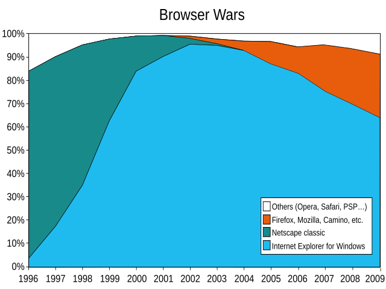
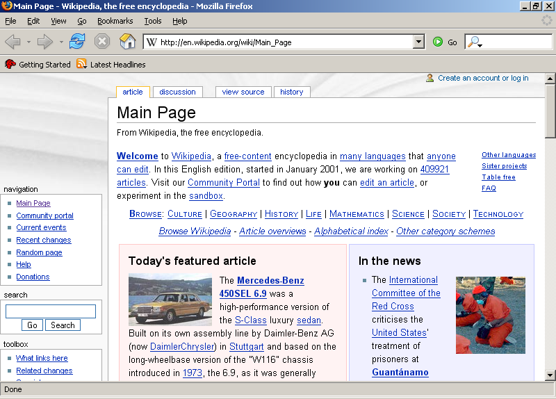
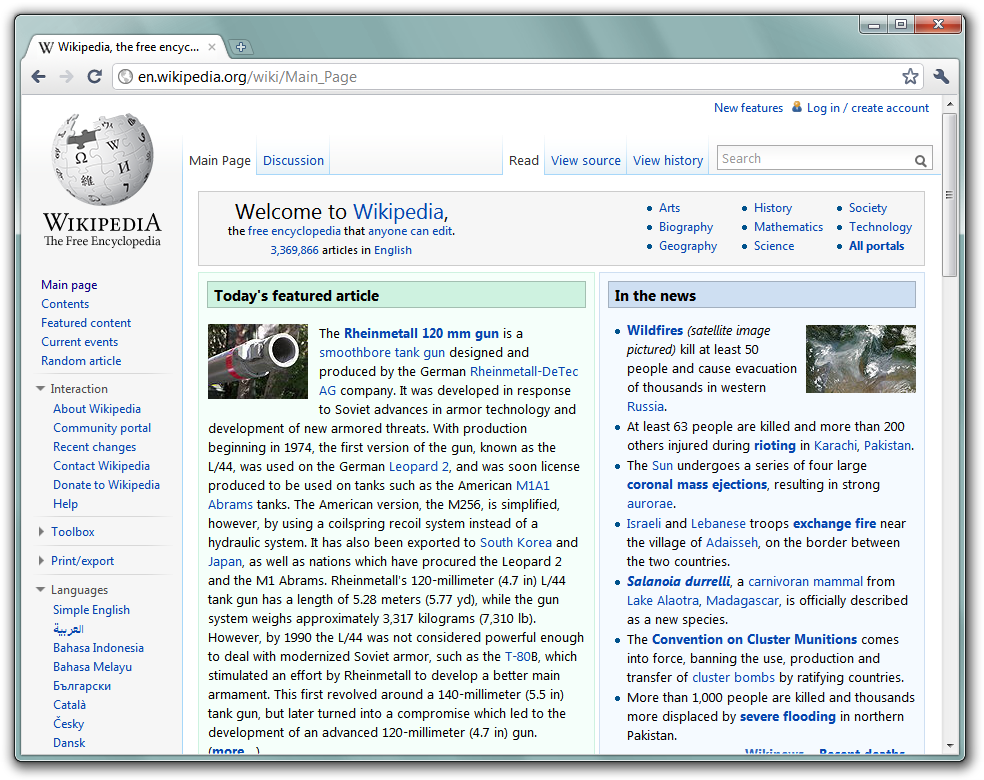

The Beginning (1989-1991)
The World Wide Web (WWW) was invented by Tim Berners-Lee at CERN around 1989-1991. He created the first web browser named WorldWideWeb, eventually renamed Nexus to avoid confusion between the browser and the Web itself. It was bare bones, using URLs for resource identity, HTTP for resource transfer, and HTML for presentation. These concepts helped establish the foundation for modern web browsing. NCSA Mosaic and Netscape Navigator came shortly afterward as their own interpretations of web browsers.
Popularization of Graphics in Browsers (1993-1995)
In 1993, the release of NCSA Mosaic helped bring the World Wide Web to a much larger audience. Unlike earlier browsers that primarily displayed text, Mosaic made it easier to view images directly alongside text on webpages. Its user-friendly interface helped make browsing more accessible to everyday computer users. Netscape Navigator followed in 1994 and became one of the most influential early commercial browsers, helping establish many features that shaped modern web browsing.

The Development of Web Standards
As web browsers became more popular, developers needed consistent standards to ensure websites worked across different browsers and operating systems. The World Wide Web Consortium (W3C) was founded in 1994 to develop recommendations and standards for the continued growth of the Web. Technologies such as HTML, CSS, and JavaScript became essential to modern web development, while improvements to browser compatibility helped reduce differences in how websites were displayed. Shared web standards allowed developers to create websites that could work across a wider range of browsers without needing entirely separate versions for each platform.
The Browser Wars (1995-2001)
The Browser Wars was a period of serious competition between web browsers. In 1995, Microsoft released Internet Explorer to compete with Netscape Navigator. Over a six year period, both browsers were being constantly updated with features and improvements to one-up the other. A major issue during this time was the inconsistent web standard support. These updates worked proprietary to their browsers because of their differences, which ended up making websites appear differently depending on the browser the user was on. Users that preferenced one browser would not be able to use a website correctly if it was made for the other browser. Web developers had to adapt by making separate versions of their websites that would work on specific browsers. Decisively, Internet Explorer ending up becoming the dominant browser because Microsoft bundled it with the Windows operating system, and web standards stopped being totally overlooked.

Going Open-Source (1998-2004)
In 1998, Netscape released its browser source code as open source, leading to the creation of the Mozilla project. Mozilla later developed Firefox, whose first version was released under the Firefox name in 2004. During the early 2000s, major browsers were using different engines such as Internet Explorer using Trident, Firefox using Gecko, and Apple's Safari using WebKit.

The Rise of Chromium
Google Chrome launched in 2008 and quickly became the fastest, simplest, and rapidly growing web ecosystem. It was built using the open-source Chromium project and uses Blink as its rendering engine. This made it the key foundation for most successful modern browsers. Opera GX, Brave, and Samsung Internet are among the popular browsers today that use Chromium. Microsoft eventually abandoned their own engine in favor of a Chromium version and rebuilt Microsoft Edge in January of 2020. The two most widely used browsers today with distinct engines are Safari, which uses WebKit, and Firefox, which uses Gecko.

Mobile Browsing (2000s-2010s)
The introduction of smartphones significantly changed the way people accessed the Internet. Apple's release of the iPhone in 2007 introduced a full web browsing experience through its mobile version of Safari. Google's Android platform also helped expand mobile browsing through browsers such as Chrome. As smartphone usage increased, browser developers began focusing more heavily on responsive webpages, touch-based navigation, mobile performance, and synchronization between desktop and mobile devices. Today, mobile browsers account for a substantial portion of worldwide web usage.
Privacy, Security, and Modern Browsers (2010s–Present)
As the Internet became increasingly important in everyday life, privacy and security became major priorities in browser development. Modern browsers began introducing more advanced protections, including phishing and malware warnings, password managers, private browsing modes, HTTPS protections, and tracking prevention. These features help users protect sensitive information, avoid malicious websites, and limit unwanted online tracking. Browser developers have also continued improving support for common web standards, accessibility, and performance to provide a more consistent experience across different devices and platforms. Today, browser development involves balancing convenience, security, privacy, and compatibility.
Artificial Intelligence in Web Browsers (2020s–Present)
Artificial intelligence is becoming increasingly present in modern web browsers. Browser developers are integrating AI assistants that can summarize webpages, answer questions about online content, assist with research, and help users complete everyday tasks. Google has introduced Gemini features in Chrome, while browsers such as Brave and Opera are developing AI-powered browsing experiences. These developments represent a shift from browsers simply displaying information toward browsers actively helping users understand and interact with it. However, integrating AI also introduces concerns involving personal privacy, inaccurate information, security vulnerabilities, and the possibility of AI systems taking unintended actions.
The Future
The future of web browsers may involve greater integration of artificial intelligence, automation, and personalized digital assistants. Instead of manually searching through multiple websites, users may increasingly rely on AI agents to research topics, compare products, organize information, and complete multi-step tasks. Browsers may also become more personalized by adapting their interfaces and recommendations to individual users. However, these advancements will introduce challenges involving data privacy, misinformation, cybersecurity, and the amount of control users give to automated systems. Browser developers will need to balance the convenience of AI-powered features with transparency, security, and user control. Although the exact direction of browser development is uncertain, artificial intelligence is likely to play a major role in shaping how people interact with the Internet.